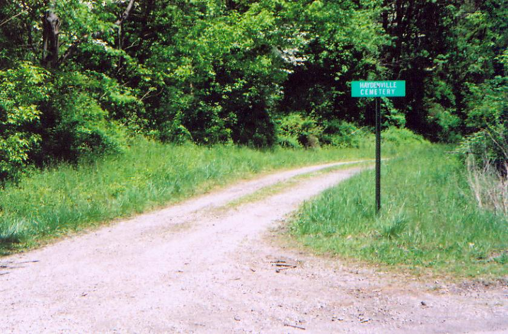
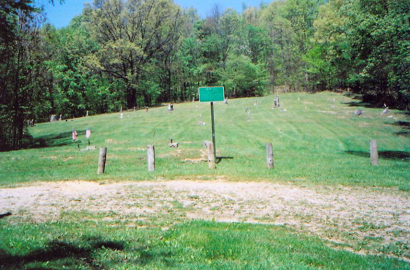
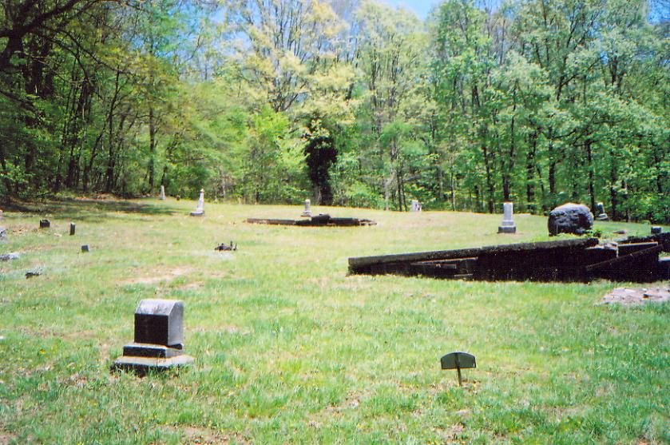
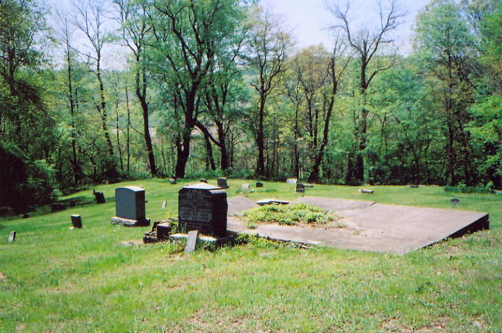
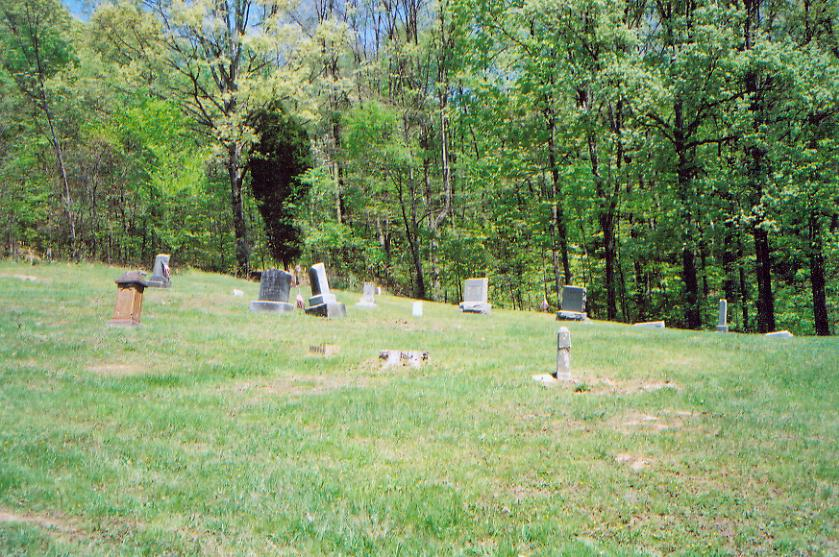
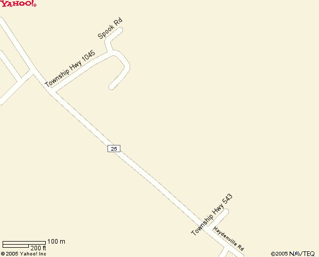
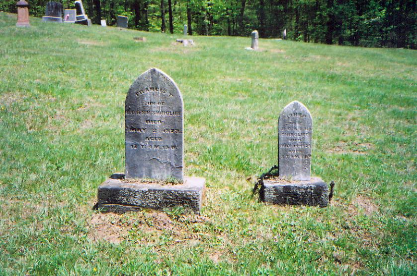
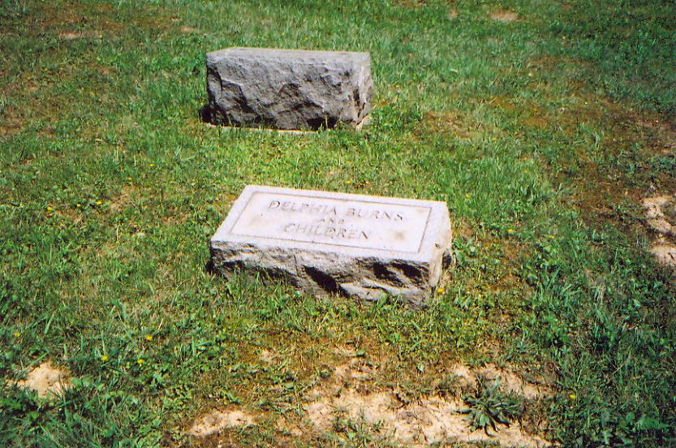

One of two haunted graveyards in the strange, historic town of Haydenville is the official village cemetery. It's located at the end of the bumpy gravel path that is Howard Road, which runs east off Haydenville Road just south of town. To find it your best bet is to leave town going south and look for the green reflectorized sign pictured above, marking the place where Howard Road, the cemetery's driveway, runs off to the left.

The way Haydenville Cemetery is laid out is very similar to the town's other haunted boneyard: Wolfe Cemetery, which is just a little further out on the main road. Both have a small sign marking the turn onto a rough, uphill gravel drive, and both have a small grass turnaround for your car. Haydenville is bigger, though, as you can tell as soon as you pull up.

The graveyard consists of a wide L-shaped clearing in the woods atop the ridge. Very old graves here, mostly employees of the brick works which ran Haydenville ("Ohio's Last Company Town") for the vast majority of its life.

There are two or three of the broad, flat stone markers that some families seem to have preferred--all broken and eroded around the edges, allowing peeks into the creepy dark underneath. Groundhogs and moles often dart out from underneath.

At Wolfe Cemetery, legend has it that a witch or warlock is trapped beneath one of these slab-like stones, and he or she will seize your ankle and pull you down into the underworld if you step on the stone at the wrong moment. At Haydenville Cemetery the ghost stories are far less specific. "Strange occurrences" is the description I received when I first heard about the place, so there have probably been lights, sounds, voices--though I have yet to receive any specific stories about encounters with anything paranormal here. Haydenville Cemetery is always listed as haunted, though, so it wouldn't be fair to ignore that reputation. It's also impossible to talk about the ghosts of the cemetery without also discussing the abandoned tunnel nearby. But we'll discuss that one a little later.

Another interesting thing about the Haydenville Cemetery area is that, just a hundred yards or so north of the cemetery proper, there is a tiny offshoot of Frog Hollow Road (Township Highway 1045) with the name Spook Road. Really. Unless this is some Dutch pioneer family's bizarre last name, I think it's safe to say that ghost legends have a firm foothold in this area.

There are many interesting graves here, and pieces of a number of tragic stories are discernible in their inscriptions. Children's markers are always particularly poignant; pictured below are the graves of the Smarcliff children, side by side. The larger stone belongs to Francis T., who died May 2, 1873, at the age of twelve. The smaller stone is his little brother John, who died two years earlier--three years old.

Medical science is all too easy to take for granted, now that we so rarely have to worry about children succumbing to disease, malnutrition, or accident. It's hard to imagine the pain that was part of the average family's everyday life in the 1800s--particurlarly in a rural area like this. Most large families had births who never saw adolescence, much less adulthood. At the Mt. Union-Pleasant Valley Cemetery in Ross County I saw the graves of the Corbit children, ages 17, 19, and 21, who died within the span of two weeks in 1832, during a cholera outbreak.
Another fascinating tidbit at Haydenville Cemetery is the small marker pictured below. It reads simply "DELPHIA BURNS AND CHILDREN." Who was Delphia? Where is her husband? How did she die, and when, and why are her children namelessly interred with her? I'd be very interested to know more about Delphia's story.
Brian, a website visitor, contributes this piece to the Delphia Burns mystery:
Was looking at your Haydenville cemetery page recently and was intrigued by Delphia Burns. I do a lot of genealogy work in my spare time, so I did a little digging. There is a Delphia Burns listed in Franklin county death records as dying on 6-Feb-1931 along with a "Stillbo" Burns on the same date. Obviously, it's most likely a stillborn child. There's only one listed, but because of the tombstone inscription, it's anybody's guess... she could have died in childbirth with twins or more.
Interesting possibilities, even though the death certificate says Franklin County. It's not unthinkable that she might have died in Columbus and been brought here for burial, perhaps after being taken to a bigger hospital to deliver a difficult pregnancy. If you know more, please help us out. Every graveyard is a unique puzzle. I'd also like to offer this advice to expectant mothers: avoid the first name "Stillbo." It just seems like bad luck.

Any one of these antiquated grave markers could account for the weird goings-on, but it's Haydenville Cemetery's proximity to an abandoned factory tunnel that might be more revealing. Interesting as the historic graveyard is, no trip to Haydenville in search of spirit presences or historical artifacts is complete without going through the woods north of the cemetery and descending the ridge. Before you've gone very far you'll come to the crumbling, brick-lined walls of a steep ravine and see the opening of the Haydenville Tunnel, part of the old brick works that kept the town alive. Read about it here.

Though I didn't have any particularly scary experiences at the cemetery, that doesn't mean it's not haunted. I've even made a night trip with friends, with no more significant results. If you've had better luck, or you know anything else about Haydenville Cemetery that you think would be useful for the website, please don't hesitate to send me an e-mail. And for further study, TopoZone topographical maps are a great help to anybody who goes tramping through the woods looking for anything obscure. Below is a map of the area from a topographical point of view.

The Haydenville Tunnel
Wolfe Cemetery
Grave Addiction: Haydenville Cemetery
TopoZone Topographical Map: Haydenville Cemetery and Surrounding Area
Find-A-Grave: Haydenville Cemetery
Back
forgottenohio@yahoo.com